1. 提案の背景と緊急課題
主要顧客であるダイナックス株式会社様より、新品刃物において貼付けができない事象が発生したとの報告を受けました。これに伴い、品質保証体制の強化が急務となっております。
リスク
現状のままでは、顧客からの信用を失い、今後の取引に重大な影響を及す可能性があります。
2. 顧客からの要求内容
ダイナックス様からは、以下の2点が義務化として要求されております。
- 金型逃げ面の表面粗さ（2箇所）の全数検査
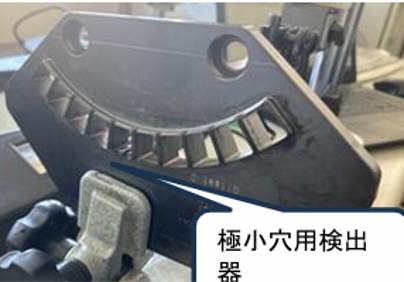
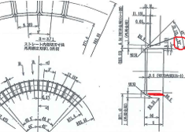
- 押出荷重検査の対象品種追加（7品種）
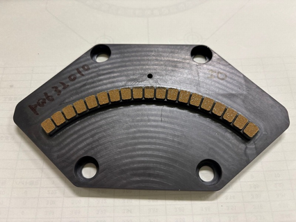
3. 現状の課題
表面粗さ測定
現在、約80種類の金型のうち4種類のみを測定している状況です。全種類の金型に対して2箇所の全数検査を行うには、設備と人員が不足しています。
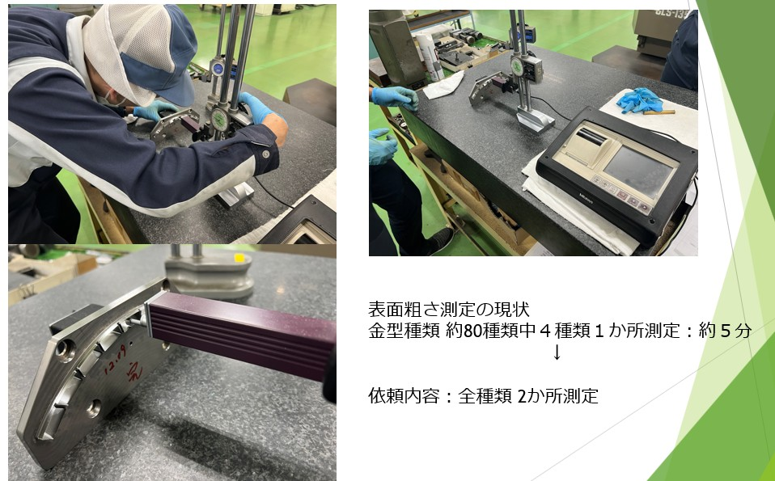
押出荷重測定
測定は手動で行っており、1枚あたり1.8時間、NG発生時の再調整と再測定には合計3.2時間と、多くの工数を要しています。
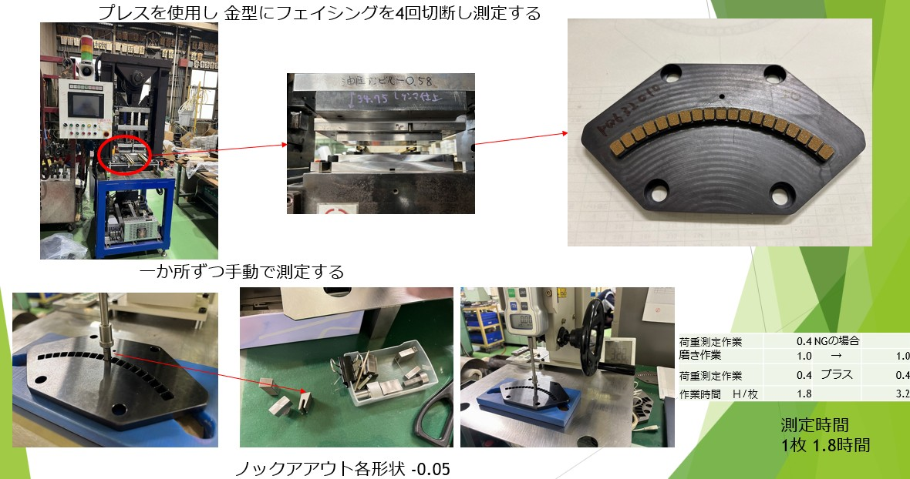
4. 課題解決に向けた具体的な提案
- ▶ 「最新 自動検査設備の検討、導入」
-
▶ 「専門人員の採用」を軸とした
全数検査・追加検査体制の構築
5. 表面粗さ 測定方法検討
測定方法検討①
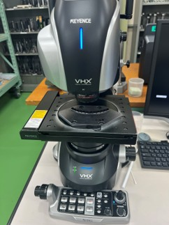- 方法: 非接触測定
- 時間: 1か所 3分
- 価格: 900万円
測定方法検討②
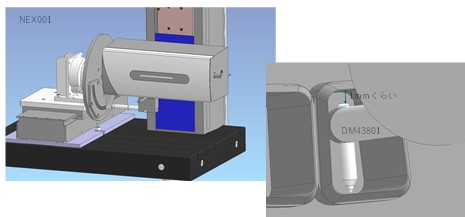- 方法: メーカーと検討中
- 時間: 未定
- 価格: 1,500万円(推定)
測定方法検討③
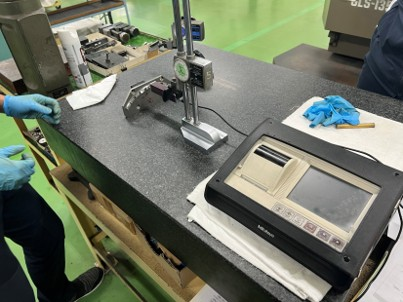- 方法: 現状の測定器を追加購入
- 台数: 2台 200万円
- ※増員必須
6. 押出荷重測定の改善案
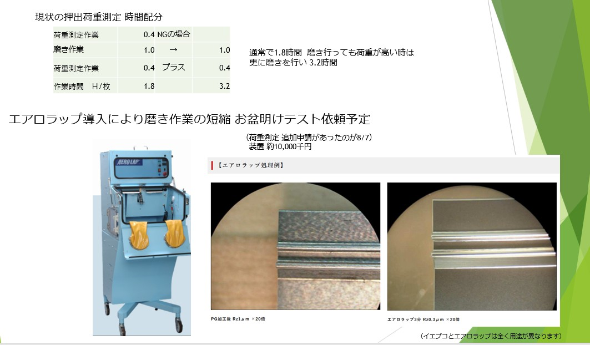
7. 表面粗さ、荷重測定時間
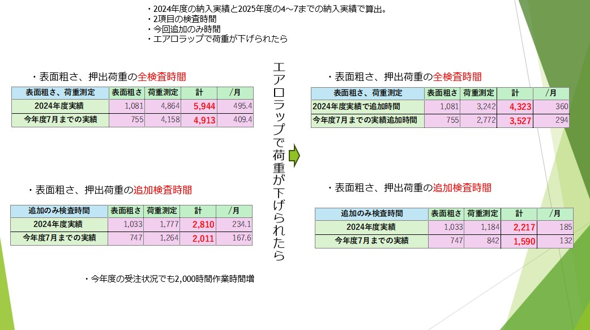
8. 結論とご承認のお願い
最重要顧客からの品質要求に対応し、今後の取引関係を維持・強化する。
-
１． 設備導入に関する投資の承認
- 汎用表面粗さ装置(2台導入 2,000千円)
- エアロラップ（投資対効果をこれから調査致します。 効果が見込めた場合は投資したい為 10,000千円 見込んで頂きたい。）
-
２． 人員の増強（採用）の承認
- 2名の追加採用依頼(検査、磨き)
補足
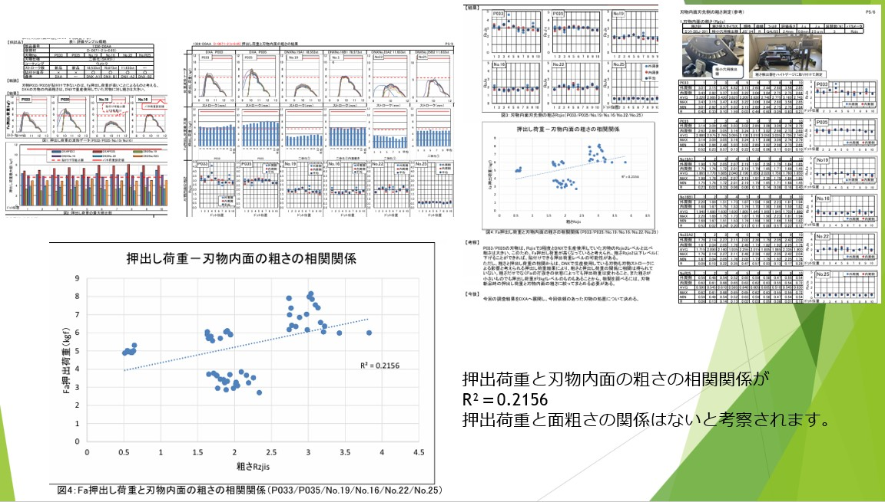